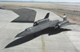

SR-71A #61-7971 (17971)
Click on thumbnail to enlarge.
Please press 'Back' on your browser to return to this page.
Show: 5, 10, All Per Page
") |
||||
|  |
{kind=link}
{kind=link}
{kind=link}
{kind=link}
{kind=link}
{kind=link}
{kind=link}
{kind=link}
{kind=link}
[<< Back] Page 1 of 2 [Next >>]
|
SR-71A #61-7971 (formerly NASA 832) is on display at the Evergreen Aviation Museum in McMinnville, OR. The dismantling of #971 for transport took place in Autumn 2002 and some of the aircraft arrived at the museum shortly after. On 4 May 2003, the fuselage arrived and #971 was reassembled; the public unveiling and display was 7 June 2003. SR-71A #971 has received a fresh coat of paint after sitting around Edwards AFB for several years following the deactivation of Det 2. It is now under the right wing of Howard Hughes' H-4 Hercules or "Spruce Goose." |
This is the most complete and accurate SR-71 display anywhere. In addition to the typical D-21 Drone and Starter Cart, it includes many interesting side displays, such as the DEF H, DEF A2C/C, AR1700, and TROC reconnaissance equipment as well as the brake fan used after the SR-71 would land.
SR-71A #61-7971 was one of the two aircraft reactivated in 1995 for Air Force service before the program was cancelled in 1998. Assembly of this aircraft started on 10 November 1965 and its roll out was on 16 August 1966. The first flight of the aircraft was on 17 November 1966 and the last flight was on 30 September 1997. This SR-71A has 3512.5 hrs of flight time.
Do you have any historical photos of SR-71A #971 that you would like to contribute?
Please send them in.